Contents
clear all; clc; close all;
DH Parameter of Manipulator
DH-Parameter is the configuration that is needed to generate the robot simulation. Using those configurations a robot can be built into a software to generate for simulation. Here Robotic Toolbox of Peter Corke's is used for generating manipulators into MATLAB. As seen below, it can be seen that each joint of a manipulator is defined into an array, and then that array is called into the SerialLink which generates the manipulator based on the DH-Parameter.
L (1) = Revolute('d',0.300 ,'a',0 ,'alpha',-pi/2 ,'qlim',[-2.6180 2.6180], 'offset',0); L (2) = Revolute('d',0 ,'a',0.250 ,'alpha',0 ,'qlim',[-1.0472 2.0944], 'offset',0); L (3) = Revolute('d',0 ,'a',0.160 ,'alpha',0 ,'qlim',[-1.9199 2.0944], 'offset',0); L (4) = Revolute('d',0 ,'a',0 ,'alpha',-pi/2 ,'qlim',[-1.5708 1.5708], 'offset',0); L (5) = Revolute('d',0.072 ,'a',0 ,'alpha',0 ,'qlim',[-3.4907 3.4907], 'offset',0); qz = [0 0 pi/2 0 0]; %Home position where all thetas are zero rv2 = SerialLink(L,'name','RV-2AJ'); rv2.manufacturer = 'JD & M';
Inputs
In this section, The task space points which are generated using other software like SolidWorks are being converted using the ConversionC function into an array. Time limit is also given to complete the given task.
% Points = conversionP('Trianguler_Piramid.csv'); Points = conversionC('Circle.csv'); N = length(Points(1,:)); timeDuration = 4; tic
Trajectory
A quintic polynomial is generated using the trajectory function for a smoother path. Quintic polynomial can smoother the position until its fifth derivative. For smoother operation as in the manipulator's joint velocity and acceleration, quintic is used.
[traj,T] = trajectory(Points,timeDuration); figure;trplot(rv2.fkine(qz),'length',0.001); hold on; for i = 1 : N-1 for j = 1 : length(traj(1,1,:,1)) trplot(traj(:,:,j,i),'length',0.01,'notext','color','r'); end end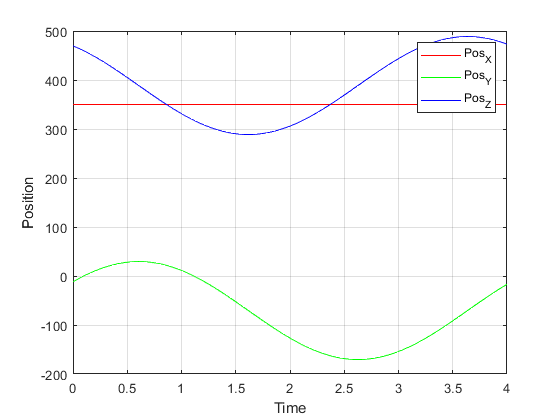 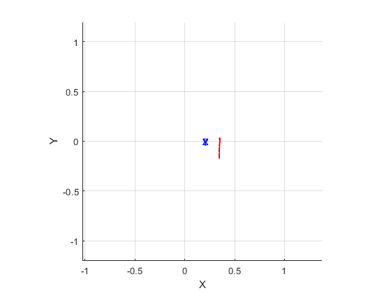
Inverse Kinematics
In this section, Inverse kinematics is solved for the above-generated trajectory. Due to the absence of an analytical solution of KR3, the numerical iterative solution is used to calculate the inverse kinematics of the given trajectory using the fsolve. Although the analytical solution is derived partially and it's used as the initial value need into the fsolve.
count = 0; for k = 1:N-1 for h = 1:length(T)-1
Des = traj(:,:,h,k);
if(h == 1 && k == 1)
Ini_val = [pi/6 pi/6 pi/6 pi/6 pi/6];
elseif(h==1 && k~=1)
Ini_val = OPx(:,length(T)-1,k-1);
else
Ini_val = OPx(:,h-1,k);
end
Func = 1e-3;
Step = 1e-3;
options = optimoptions('fsolve','Display','off','Algorithm','levenberg-marquardt','FunValCheck','on','FunctionTolerance',Func,'StepTolerance',Step);
OPx(:,h,k) = fsolve(@ikine_Num,Ini_val,options,Des);
Checking Singularities
To detect any type of singularity, a conditional filter is used in which the Jacobian Matrix is calculated and its determinant is the which is used to separate the singular pose.
Jacobian(:,:,h,k) = rv2.jacob0(OPx(:,h,k));
Determinant(h,k) = det(Jacobian(:,:,h,k)'*Jacobian(:,:,h,k));
if ((Determinant(h,k) <= 1e-4) && (Determinant(h,k) >= (-(1e-4))))
fprintf('\n Jacobian of the pose(%d(%d)).\n',k,h);
disp(Jacobian(:,:,h,k));
fprintf('\n Determinant of the pose(%d(%d)): %f\n',k,h,Determinant(h,k));
warning('Determinant of the pose zero it shows the singularity.')
end
rv2.plot(OPx(:,h,k)');
Ans(h,k) = rv2.fkine(OPx(:,h,k));
trplot(Ans(h,k),'length',0.03,'notext');
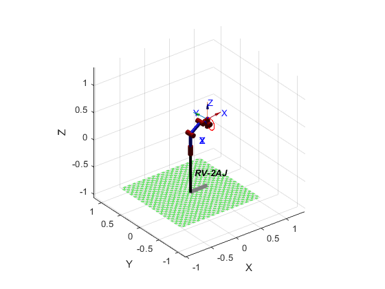 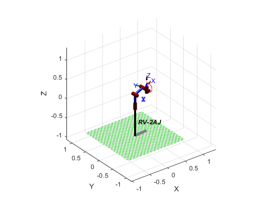 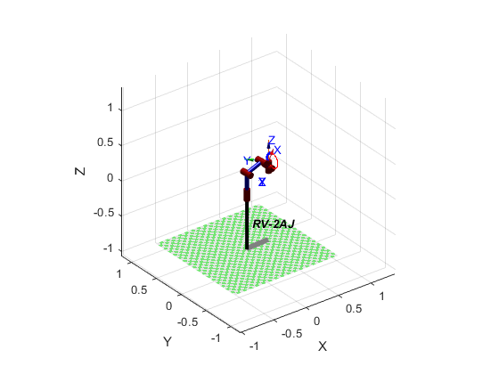 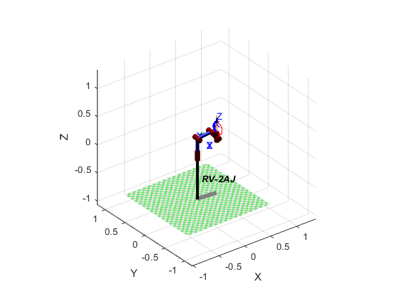  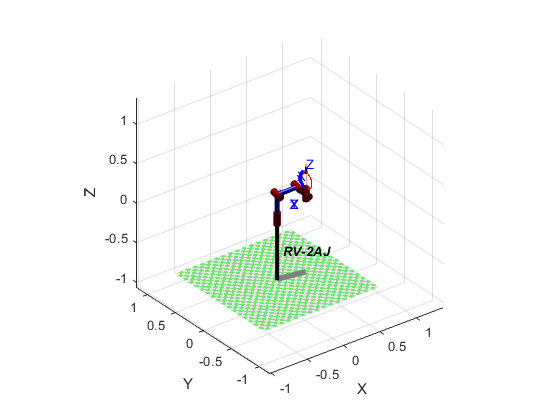
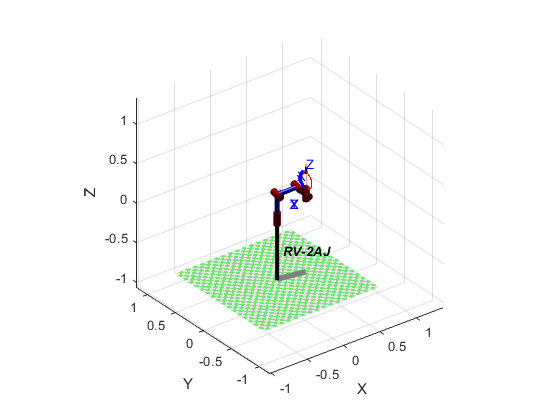  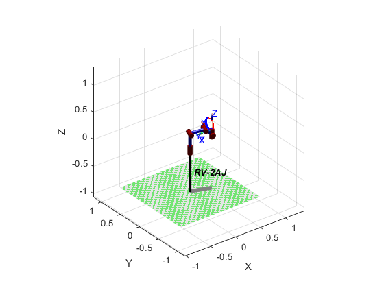 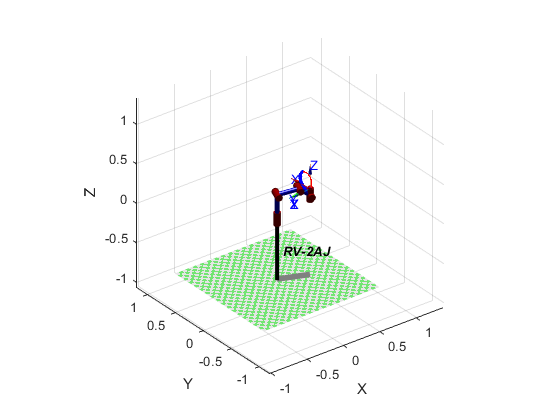
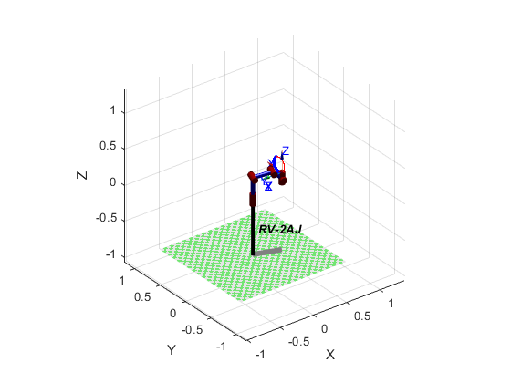 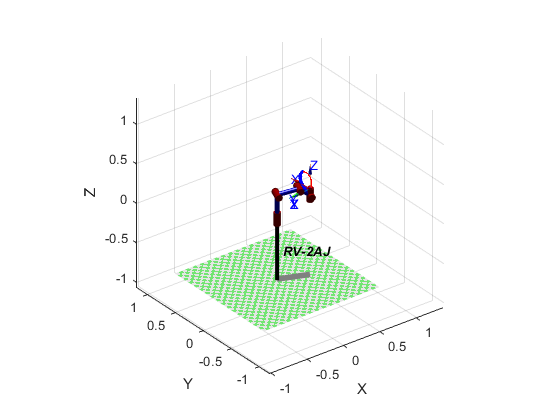
Jacobian of the pose(59(1)).
0.1610 0.0419 -0.0042 0.0654 0
0.3500 -0.0193 0.0019 -0.0301 0
-0.0000 -0.3852 -0.1405 -0.0000 0
-0.0000 0.4179 0.4179 0.4179 0.0000
0.0000 0.9085 0.9085 0.9085 -0.0000
1.0000 0.0000 0.0000 0.0000 1.0000
Determinant of the pose(59(1)): 0.000099
Warning: Determinant of the pose zero it
shows the singularity.
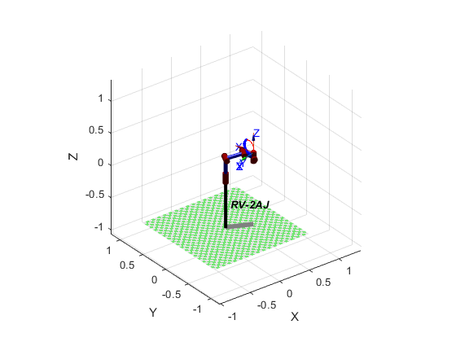
Jacobian of the pose(60(1)).
0.1635 0.0470 -0.0014 0.0652 0
0.3500 -0.0220 0.0007 -0.0305 0
0.0000 -0.3863 -0.1421 -0.0000 0
0.0000 0.4232 0.4232 0.4232 0.0000
-0.0000 0.9060 0.9060 0.9060 -0.0000
1.0000 0.0000 0.0000 0.0000 1.0000
Determinant of the pose(60(1)): 0.000098
Warning: Determinant of the pose zero it
shows the singularity.
Jacobian of the pose(61(1)).
0.1656 0.0522 0.0013 0.0651 0
0.3500 -0.0247 -0.0006 -0.0308 0
-0.0000 -0.3872 -0.1436 -0.0000 0
0.0000 0.4277 0.4277 0.4277 0.0000
-0.0000 0.9039 0.9039 0.9039 -0.0000
1.0000 0.0000 0.0000 0.0000 1.0000
Determinant of the pose(61(1)): 0.000096
Warning: Determinant of the pose zero it
shows the singularity.
Jacobian of the pose(62(1)).
0.1674 0.0576 0.0041 0.0650 0
0.3500 -0.0275 -0.0020 -0.0311 0
0.0000 -0.3880 -0.1451 -0.0000 0
0.0000 0.4314 0.4314 0.4314 0.0000
-0.0000 0.9022 0.9022 0.9022 -0.0000
1.0000 0.0000 0.0000 0.0000 1.0000
Determinant of the pose(62(1)): 0.000094
Warning: Determinant of the pose zero it
shows the singularity.
Jacobian of the pose(63(1)).
0.1687 0.0630 0.0068 0.0649 0
0.3500 -0.0304 -0.0033 -0.0313 0
-0.0000 -0.3885 -0.1465 -0.0000 0
0.0000 0.4343 0.4343 0.4343 0.0000
-0.0000 0.9008 0.9008 0.9008 -0.0000
1.0000 0.0000 0.0000 0.0000 1.0000
Determinant of the pose(63(1)): 0.000092
Warning: Determinant of the pose zero it
shows the singularity.
Jacobian of the pose(64(1)).
0.1697 0.0685 0.0095 0.0648 0
0.3500 -0.0332 -0.0046 -0.0314 0
-0.0000 -0.3890 -0.1477 -0.0000 0
0.0000 0.4363 0.4363 0.4363 0.0000
0.0000 0.8998 0.8998 0.8998 -0.0000
1.0000 0.0000 0.0000 0.0000 1.0000
Determinant of the pose(64(1)): 0.000091
Warning: Determinant of the pose zero it
shows the singularity.
Jacobian of the pose(65(1)).
0.1703 0.0741 0.0121 0.0647 0
0.3500 -0.0361 -0.0059 -0.0315 0
-0.0000 -0.3892 -0.1489 -0.0000 0
-0.0000 0.4376 0.4376 0.4376 0.0000
0.0000 0.8992 0.8992 0.8992 -0.0000
1.0000 0.0000 0.0000 0.0000 1.0000
Determinant of the pose(65(1)): 0.000090
Warning: Determinant of the pose zero it
shows the singularity.
Jacobian of the pose(66(1)).
0.1705 0.0797 0.0147 0.0647 0
0.3500 -0.0388 -0.0072 -0.0315 0
0.0000 -0.3893 -0.1500 -0.0000 0
0.0000 0.4380 0.4380 0.4380 0.0000
-0.0000 0.8990 0.8990 0.8990 -0.0000
1.0000 0.0000 0.0000 0.0000 1.0000
Determinant of the pose(66(1)): 0.000089
Warning: Determinant of the pose zero it
shows the singularity.
Jacobian of the pose(67(1)).
0.1703 0.0854 0.0171 0.0647 0
0.3499 -0.0415 -0.0083 -0.0315 0
-0.0000 -0.3891 -0.1510 -0.0000 0
0.0000 0.4375 0.4375 0.4375 0.0000
-0.0000 0.8992 0.8992 0.8992 -0.0000
1.0000 0.0000 0.0000 0.0000 1.0000
Determinant of the pose(67(1)): 0.000088
Warning: Determinant of the pose zero it
shows the singularity.
Jacobian of the pose(68(1)).
0.1697 0.0911 0.0195 0.0648 0
0.3499 -0.0442 -0.0095 -0.0314 0
-0.0000 -0.3889 -0.1519 -0.0000 0
0.0000 0.4363 0.4363 0.4363 0.0000
-0.0000 0.8998 0.8998 0.8998 -0.0000
1.0000 0.0000 0.0000 0.0000 1.0000
Determinant of the pose(68(1)): 0.000087
Warning: Determinant of the pose zero it
shows the singularity.
Jacobian of the pose(69(1)).
0.1687 0.0968 0.0218 0.0649 0
0.3499 -0.0466 -0.0105 -0.0313 0
-0.0000 -0.3885 -0.1527 -0.0000 0
0.0000 0.4343 0.4343 0.4343 0.0000
-0.0000 0.9008 0.9008 0.9008 -0.0000
1.0000 0.0000 0.0000 0.0000 1.0000
Determinant of the pose(69(1)): 0.000087
Warning: Determinant of the pose zero it
shows the singularity.
Jacobian of the pose(70(1)).
0.1673 0.1024 0.0241 0.0650 0
0.3499 -0.0490 -0.0115 -0.0311 0
-0.0000 -0.3879 -0.1535 -0.0000 0
0.0000 0.4314 0.4314 0.4314 0.0000
0.0000 0.9022 0.9022 0.9022 -0.0000
1.0000 0.0000 0.0000 0.0000 1.0000
Determinant of the pose(70(1)): 0.000086
Warning: Determinant of the pose zero it
shows the singularity.
Jacobian of the pose(71(1)).
0.1656 0.1081 0.0263 0.0651 0
0.3500 -0.0511 -0.0124 -0.0308 0
-0.0000 -0.3872 -0.1541 -0.0000 0
0.0000 0.4277 0.4277 0.4277 0.0000
-0.0000 0.9039 0.9039 0.9039 -0.0000
1.0000 0.0000 0.0000 0.0000 1.0000
Determinant of the pose(71(1)): 0.000086
Warning: Determinant of the pose zero it
shows the singularity.
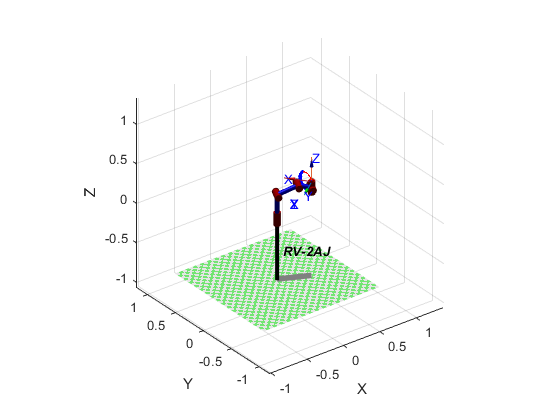
Jacobian of the pose(72(1)).
0.1635 0.1137 0.0283 0.0652 0
0.3500 -0.0531 -0.0132 -0.0305 0
-0.0000 -0.3863 -0.1547 0.0000 0
0.0000 0.4232 0.4232 0.4232 -0.0000
0.0000 0.9060 0.9060 0.9060 0.0000
1.0000 0.0000 0.0000 0.0000 1.0000
Determinant of the pose(72(1)): 0.000086
Warning: Determinant of the pose zero it
shows the singularity.
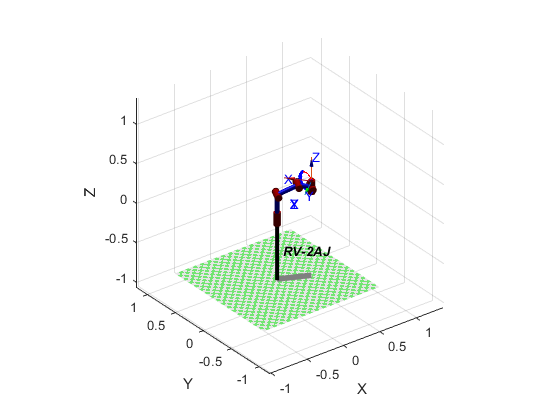
Jacobian of the pose(73(1)).
0.1610 0.1193 0.0303 0.0654 0
0.3500 -0.0549 -0.0139 -0.0301 0
-0.0000 -0.3853 -0.1553 0.0000 0
0.0000 0.4179 0.4179 0.4179 -0.0000
0.0000 0.9085 0.9085 0.9085 0.0000
1.0000 0.0000 0.0000 0.0000 1.0000
Determinant of the pose(73(1)): 0.000086
Warning: Determinant of the pose zero it
shows the singularity.

Jacobian of the pose(74(1)).
0.1582 0.1247 0.0321 0.0656 0
0.3500 -0.0564 -0.0145 -0.0296 0
0.0000 -0.3841 -0.1557 0.0000 0
-0.0000 0.4117 0.4117 0.4117 -0.0000
-0.0000 0.9113 0.9113 0.9113 0.0000
1.0000 0.0000 0.0000 0.0000 1.0000
Determinant of the pose(74(1)): 0.000087
Warning: Determinant of the pose zero it
shows the singularity.
Jacobian of the pose(75(1)).
0.1550 0.1301 0.0337 0.0658 0
0.3500 -0.0576 -0.0149 -0.0291 0
-0.0000 -0.3828 -0.1561 0.0000 0
0.0000 0.4048 0.4048 0.4048 -0.0000
0.0000 0.9144 0.9144 0.9144 0.0000
1.0000 0.0000 0.0000 0.0000 1.0000
Determinant of the pose(75(1)): 0.000087
Warning: Determinant of the pose zero it
shows the singularity.
Jacobian of the pose(76(1)).
0.1514 0.1354 0.0353 0.0661 0
0.3501 -0.0586 -0.0153 -0.0286 0
-0.0000 -0.3814 -0.1564 0.0000 0
0.0000 0.3970 0.3970 0.3970 -0.0000
-0.0000 0.9178 0.9178 0.9178 0.0000
1.0000 0.0000 0.0000 0.0000 1.0000
Determinant of the pose(76(1)): 0.000088
Warning: Determinant of the pose zero it
shows the singularity.

Jacobian of the pose(77(1)).
0.1476 0.1405 0.0367 0.0663 0
0.3501 -0.0592 -0.0155 -0.0280 0
-0.0000 -0.3799 -0.1567 0.0000 0
-0.0000 0.3885 0.3885 0.3885 -0.0000
0.0000 0.9215 0.9215 0.9215 0.0000
1.0000 0.0000 0.0000 0.0000 1.0000
Determinant of the pose(77(1)): 0.000089
Warning: Determinant of the pose zero it
shows the singularity.
Jacobian of the pose(78(1)).
0.1434 0.1454 0.0379 0.0666 0
0.3501 -0.0596 -0.0155 -0.0273 0
-0.0000 -0.3783 -0.1570 0.0000 0
0.0000 0.3791 0.3791 0.3791 -0.0000
0.0000 0.9253 0.9253 0.9253 0.0000
1.0000 0.0000 0.0000 0.0000 1.0000
Determinant of the pose(78(1)): 0.000090
Warning: Determinant of the pose zero it
shows the singularity.
Jacobian of the pose(79(1)).
0.1390 0.1502 0.0390 0.0669 0
0.3501 -0.0596 -0.0155 -0.0266 0
-0.0000 -0.3767 -0.1572 0.0000 0
0.0000 0.3690 0.3690 0.3690 -0.0000
0.0000 0.9294 0.9294 0.9294 0.0000
1.0000 0.0000 0.0000 0.0000 1.0000
Determinant of the pose(79(1)): 0.000091
Warning: Determinant of the pose zero it
shows the singularity.
Jacobian of the pose(80(1)).
0.1343 0.1548 0.0398 0.0672 0
0.3500 -0.0594 -0.0153 -0.0258 0
0.0000 -0.3749 -0.1573 0.0000 0
0.0000 0.3581 0.3581 0.3581 -0.0000
-0.0000 0.9337 0.9337 0.9337 0.0000
1.0000 0.0000 0.0000 0.0000 1.0000
Determinant of the pose(80(1)): 0.000093
Warning: Determinant of the pose zero it
shows the singularity.
Jacobian of the pose(81(1)).
0.1293 0.1591 0.0407 0.0675 0
0.3501 -0.0588 -0.0150 -0.0249 0
0.0000 -0.3732 -0.1574 0.0000 0
-0.0000 0.3465 0.3465 0.3465 -0.0000
-0.0000 0.9380 0.9380 0.9380 0.0000
1.0000 0.0000 0.0000 0.0000 1.0000
Determinant of the pose(81(1)): 0.000094
Warning: Determinant of the pose zero it
shows the singularity.

Jacobian of the pose(82(1)).
0.1241 0.1632 0.0412 0.0679 0
0.3500 -0.0579 -0.0146 -0.0241 0
-0.0000 -0.3714 -0.1575 0.0000 0
0.0000 0.3342 0.3342 0.3342 -0.0000
0.0000 0.9425 0.9425 0.9425 0.0000
1.0000 0.0000 0.0000 0.0000 1.0000
Determinant of the pose(82(1)): 0.000096
Warning: Determinant of the pose zero it
shows the singularity.

Jacobian of the pose(83(1)).
0.1187 0.1670 0.0416 0.0682 0
0.3500 -0.0566 -0.0141 -0.0231 0
0.0000 -0.3696 -0.1575 0.0000 0
0.0000 0.3212 0.3212 0.3212 -0.0000
-0.0000 0.9470 0.9470 0.9470 0.0000
1.0000 0.0000 0.0000 0.0000 1.0000
Determinant of the pose(83(1)): 0.000098
Warning: Determinant of the pose zero it
shows the singularity.
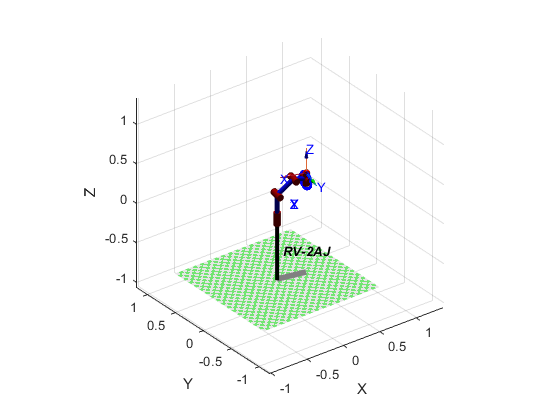 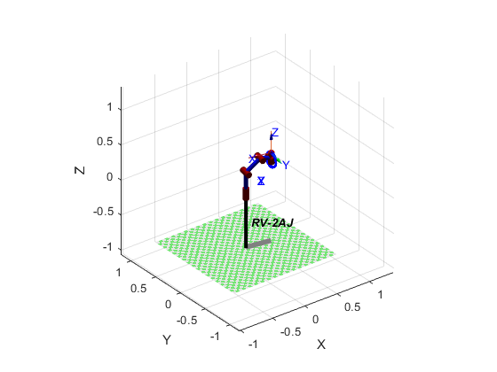 
end TimeStamp(:,k) = T+((k-1)*(timeDuration/(N-1))); end toc
Elapsed time is 96.034711 seconds.